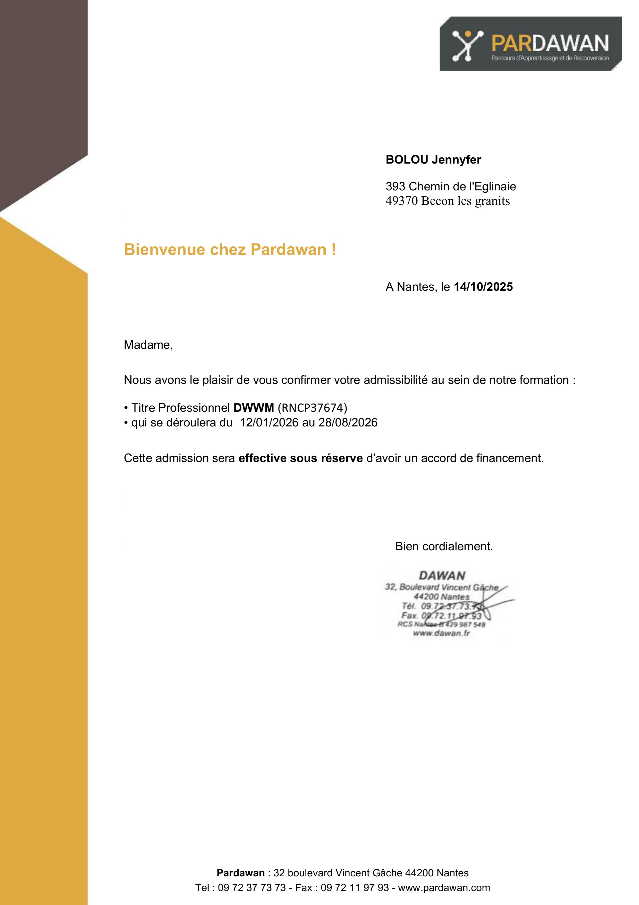

Bolou
Développeuse Web Junior
À propos
Issue du secteur industriel en tant que pilote de ligne de conditionnement, j'y ai développé une forte rigueur, une capacité de résolution de problèmes en temps réel et un sens aigu de l'organisation. Passionnée par la technique, je développe depuis plusieurs années un projet personnel impliquant la création d'applications interactives en C++.
Souhaitant concrétiser cette appétence pour le code dans un cadre professionnel, je me suis formée en autonomie aux langages du web (HTML, CSS) via OpenClassrooms, avant d'être admise chez PARDAWAN pour préparer un titre professionnel de Développeur Web (Bac +2).
Ce site vitrine constitue la première preuve concrète de ma démarche : me positionner comme une candidate autonome, réactive et immédiatement mobilisable dans le cadre d'un contrat en alternance.
Initialement retenue pour intégrer la formation diplômante de PARDAWAN (niveau Bac +2), la prise en charge individuelle n'a pas été accordée par France Travail. Ce diplôme étant également accessible en contrat d'apprentissage ou de professionnalisation, je recherche activement une entreprise partenaire pour m'accueillir en alternance et concrétiser ce projet
J'ai donc créé ce site dans l'espoir qu'il vous donnera la certitude de ma motivation et de mes compétences sur ma capacité à relever les défis du développement web, et dans l'éventualité qu'il ne sera pas un risque pour vous de m'accorder votre confiance pour une alternance.
Documents

Profil & Compétences
Concevoir une application ou un site web exige de l'autonomie, une méthodologie structurée et une capacité constante à explorer la documentation technique pour résoudre les bugs d'affichage ou de logique.
Mes projets personnels m'ont permis d'assimiler les fondamentaux du développement : intégration responsive, gestion de l'interaction utilisateur, structuration du code et manipulation de liens et formulaires.
Mon parcours polyvalent (industrie agroalimentaire, secteur médico-social, commerce) constitue un atout solide pour m'intégrer rapidement au sein d'une équipe, comprendre les besoins métiers et communiquer efficacement, que ce soit en présentiel ou à distance.
Mon objectif : mettre ma rigueur technique et mon enthousiasme au service d'une entreprise prête à accompagner ma montée en compétences.
HTML
SFML
CSS
W3.CSS
C++
gd.script
Télécharger le CV
Contactez-moi
Vous pouvez m'envoyer un message via le formulaire :